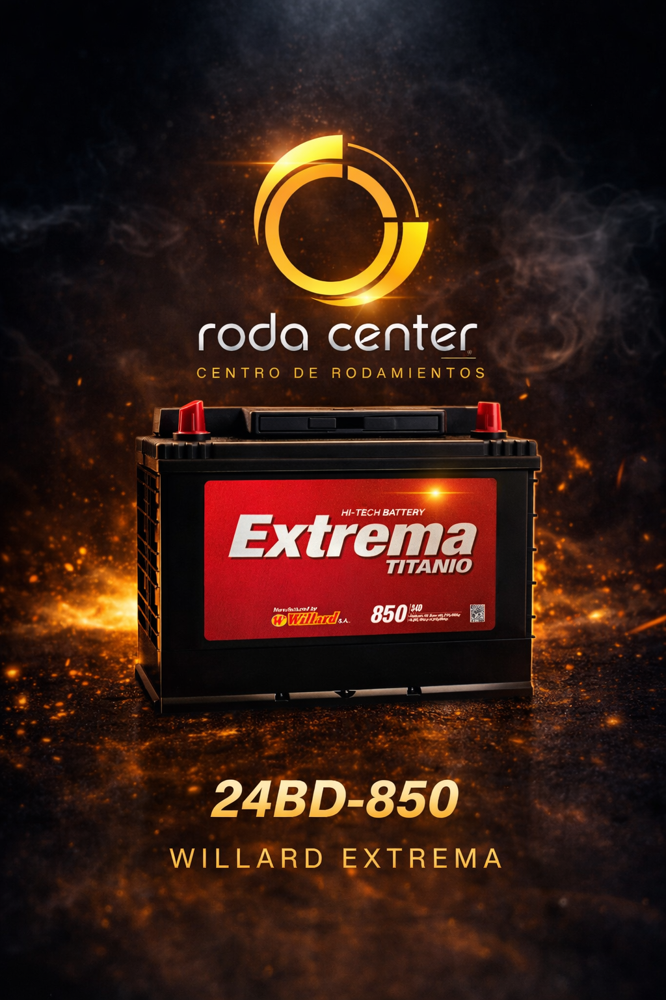
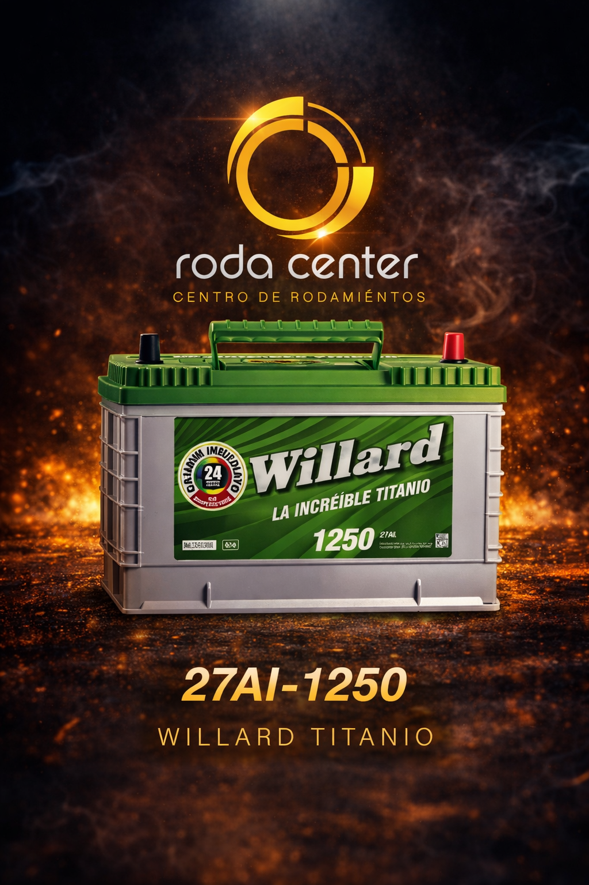
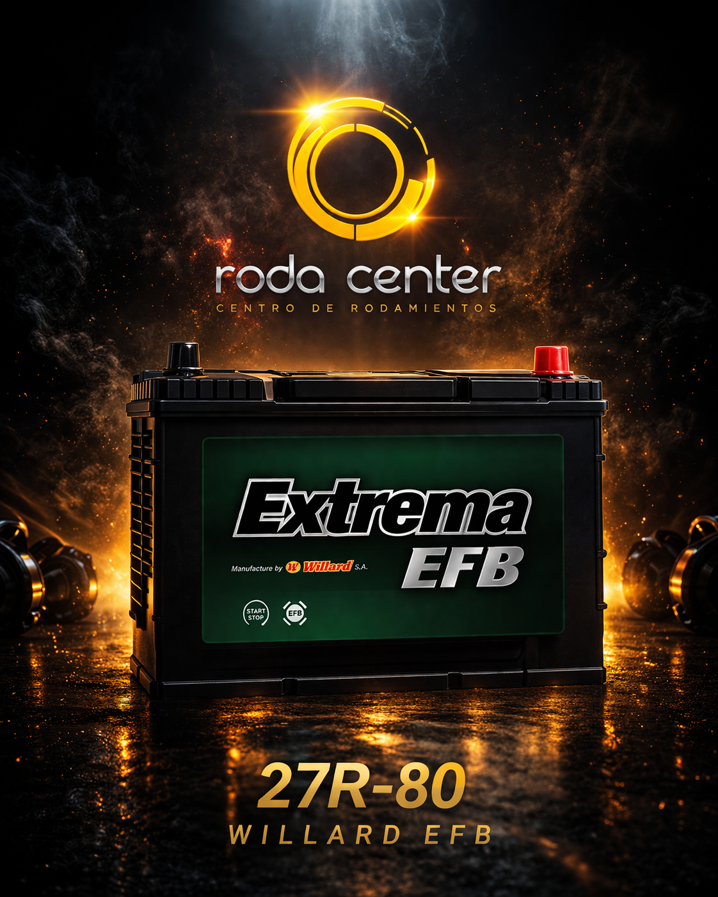
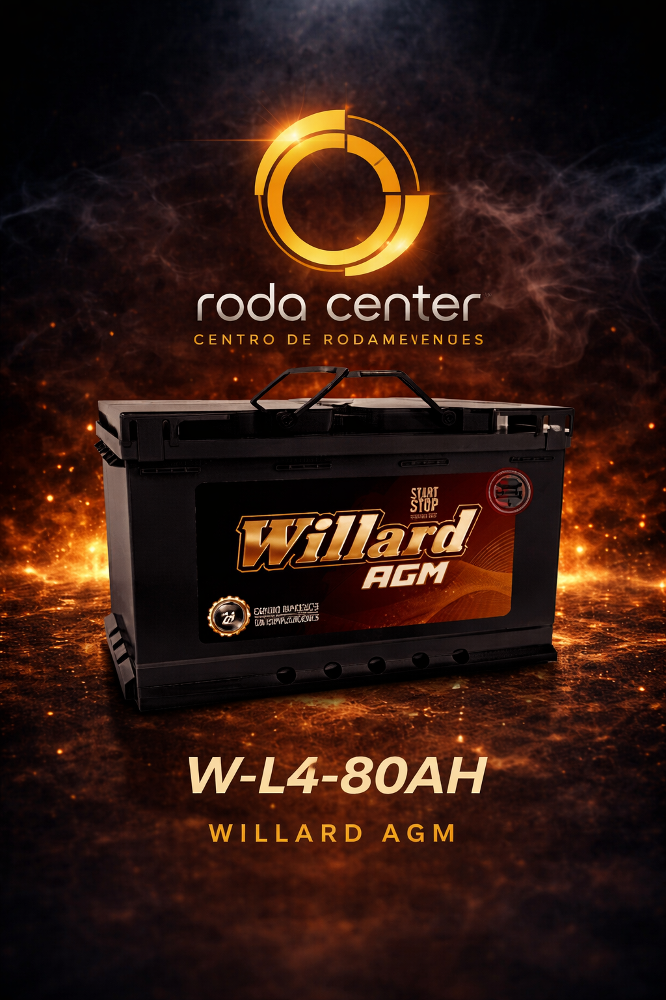

Trabajamos con baterías Willard, reconocidas por su alta calidad, excelente rendimiento y larga duración, ideales para garantizar el arranque y funcionamiento óptimo de tu vehículo.
Contamos con disponibilidad para todo tipo de vehículos: livianos, particulares vehículos pesados.
🚗 Servicio a domicilio con instalación GRATIS dentro de la ciudad de Manizales.
🔋 Entregando tu batería usada, obtienes descuentos adicionales.
🛡️ Todas nuestras baterías cuentan con garantía a nivel nacional.
📞 Atención personalizada: 314 276 6279